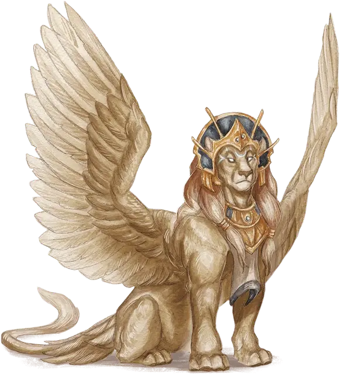

Гиносфинкс
Gynosphinx
Большой Монстр, законно-нейтральный

Класс Доспеха 17 (природный доспех)
Хиты 136 (16к10 + 48)
Скорость 40 футов, летая 60 футов
| мод | спас | ||
|---|---|---|---|
| СИЛ | 18 | +4 | +4 |
| ЛОВ | 15 | +2 | +2 |
| ТЕЛ | 16 | +3 | +3 |
| мод | спас | ||
|---|---|---|---|
| ИНТ | 18 | +4 | +4 |
| МДР | 18 | +4 | +4 |
| ХАР | 18 | +4 | +4 |
Навыки Восприятие +8, История +12, Магия +12, Религия +8
Сопротивление урону дробящий, колющий, рубящий от немагических атак
Иммунитет к урону психическая энергия
Иммунитет к состояниям очарование, испуг
Чувства истинное зрение 120 футов, пассивное Восприятие 18
Языки Общий, Язык Сфинксов
Опасность 11 (7200 опыта)
Бонус мастерства +4
Среда обитания Пустыня
Особенности
Непостижимый. Сфинкс обладает иммунитетом ко всем эффектам, которые чувствуют его эмоции или читают мысли, а также заклинаниям школы Прорицания, неугодным ему. Проверки Мудрости (Проницательность), совершенные для определения намерений и искренности сфинкса, совершаются с помехой.
Магическое оружие. Атаки оружием сфинкса являются магическими.
Использование заклинаний. Сфинкс является заклинателем 9 уровня. Его базовой характеристикой является Интеллект (Сл спасброска от заклинания 16, +8 к попаданию атаками заклинаниями). Ему не требуются материальные компоненты для накладывания заклинаний. У сфинкса подготовлены следующие заклинания волшебника:
• Заговоры (неограниченно): волшебная рука [mage hand], малая иллюзия [minor illusion], фокусы [prestidigitation];
• 1 уровень (4 ячейки): обнаружение магии [detect magic], опознание [identify], щит [shield];
• 2 уровень (3 ячейки): внушение [suggestion], поиск предмета [locate object], тьма [darkness];
• 3 уровень (3 ячейки): рассеивание магии [dispel magic], снятие проклятья [remove curse], языки [tongues];
• 4 уровень (3 ячейки): изгнание [banishment], высшая невидимость [greater invisibility];
• 5 уровень (1 ячейка): знание легенд [legend lore];
Действия
Мультиатака. Сфинкс совершает две атаки когтем.
Коготь. Рукопашная атака оружием: +8 к попаданию, досягаемость 5 футов, одна цель. Попадание: Рубящий урон 13 (2к8 + 4).
Легендарные действия
Сфинкс может совершить 3 легендарных действия, выбирая из представленных ниже вариантов. За один раз можно использовать только одно легендарное действие, и только в конце хода другого существа. Сфинкс восстанавливает использованные легендарные действия в начале своего хода.
Атака когтем. Сфинкс совершает одну атаку когтем.
Телепортация (стоит 2 действия). Сфинкс магическим образом телепортируется вместе со всем несомым и носимым снаряжением, на расстояние до 120 футов в свободное пространство, которое он видит.
Накладывание заклинания (стоит 3 действия). Сфинкс накладывает заклинание из списка подготовленных заклинаний, используя ячейку заклинаний, как обычно.
Описание
Тело гиносфинкса венчает голова гуманоидной женщины. Многие обладают благородными ликами земных цариц, но некоторые обладают дикими, львиными чертами. Глаза гиносфинкса взирают сквозь пространство и время, видя через завесы невидимости и магии. Гости, слишком глубоко заглянувшие в эти глаза, могут обнаружить себя магическим образом перенесенными на какой-то далекий план, где их ожидают сложные испытания.
Гиносфинксы являют собой кладези знаний и легенд. Они загадывают загадки и головоломки, чтобы проверить смекалку своих гостей, которые приходят вызнать их секреты. Некоторые из них готовы заключить с такими гостями сделку в обмен на сокровища или услуги.
См. дополнительно статью: "Бестиарий: Сфинксы"